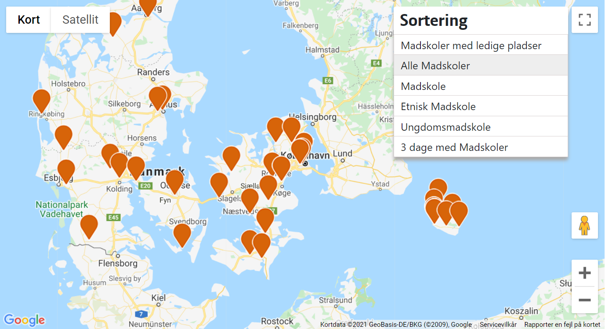

Madskoler bliver holdt på skoler i hele landet.
Princippet for oprettelsen af Madskoler er, at vi afholder Madskoler, hvor der er nok frivillige, som ønsker at være med. Vi annoncerer de første skoler i foråret og opretter herefter Madskoler løbende i takt med, at tilmeldingerne fra frivillige kommer på plads.
VI ÅBNER LØBENDE OP FOR FLERE MADSKOLER INDEN SOMMERFERIEN
Se på kortet hvor der afholdes Madskoler i sommerferien 2021:
